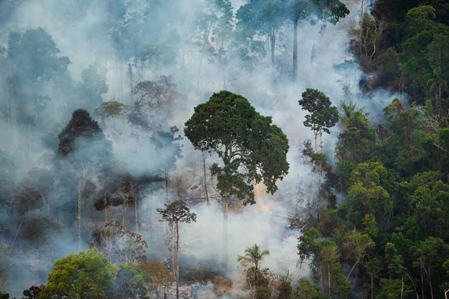

Lula diz que União Europeia está “ameaçando” colocar queimadas na mesa de negociação
Monitoramento de queimadas no Brasil com sensoriamento remoto
Google doa R$ 1,2 milhão para combate a incêndios no Brasil

Amazônia já tem mais de 50 mil focos de fogo em 2024 e fumaça se espalha pelo país